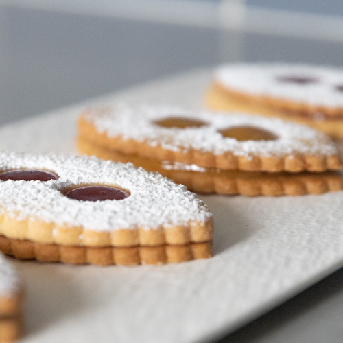
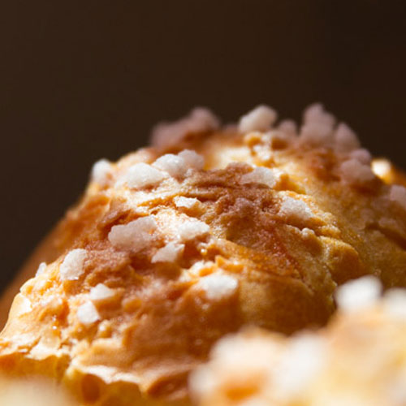

Diplômée d'un CAP Pâtisserie depuis 2012, Lucie Ditée est passée par les grandes tables Parisiennes comme la tour d'Argent ou le Ritz. Ceci lui a permis d'obtenir une rigueur exceptionnelle dans ses réalisations. Issue d'une famille travaillant dans les métiers de bouche, elle a su bénéficier de ces différents horizons pour proposer une carte originale et de qualité.
Mes réalisations
Brioche cannelle ou Kanelbulle
La kanelbulle (que l'on pourrait traduire par « brioche à la cannelle ») est une viennoiserie provenant de Suède mais également présente dans le reste de l'Europe du Nord, en Alsace-Moselle sous le nom de Schnäggekueche et connu en Amérique du Nord sous le nom de cinnamon rolls.
Macarons
Le macaron est une mignardise française à l'amande, granuleux et moelleux, à la forme arrondie, d'environ 3 à 5 cm de diamètre, dérivé de la meringue.
Il est fabriqué à partir d'amandes concassées, de sucre glace, de sucre et de blancs d'œufs, la quantité d'amande devant être égale à la quantité de sucre glace (ce qu'on appelle le tant pour tant).

Lunette de Romans
La lunette de Romans est un sablé pâtissier fourré originaire de Romans-sur-Isère qui a la forme d'un ovale aux bords dentelés et recouvert de sucre glace.
Opéra thé matcha
L'opéra est une pâtisserie française constituée d’une succession de biscuit Joconde, de ganache au chocolat et de crème au beurre au café.
Muffins banane chocolat
Les muffins sont de petits gâteaux individuels s'apparentant aux madeleines. Apparus au pays de Galles aux alentours du xie siècle, ils sont très répandus dans les pays anglo-saxons. Les muffins les plus connus en France sont ceux de la variété américaine.

Chouquettes
Une chouquette est une petite pâtisserie soufflée à base de pâte à choux et de perle de sucre. La chouquette est faite de pâte à choux qui est constituée d'eau ou de lait (ou même moitié-moitié), de beurre, de farine de froment, d'œufs et de sel, parsemée de sucre perlé, cuite dans un four.
Tarte normande
La tarte normande est une spécialité culinaire de Normandie. Il s'agit d'une tarte aux pommes dont la garniture est composée de farine, d'œufs, de crème, de sucre et d'un peu de calvados1. Il est primordial d'utiliser des pommes de bonne qualité et surtout de bien équilibrer la quantité de pommes (qui doit être importante), et la quantité de garniture. La cuisson au four doit légèrement caraméliser la partie supérieure des quartiers de pomme.
Me contacter
Une envie ? Une question ? Une commande ? N'hésitez pas à me contacter. Je m'engage à vous répondre en moins de 48h !